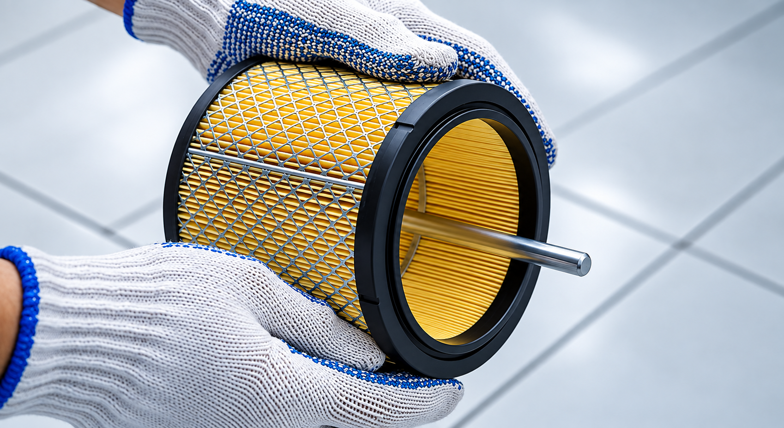
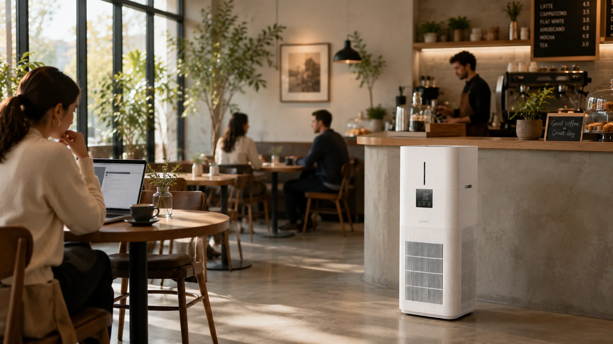
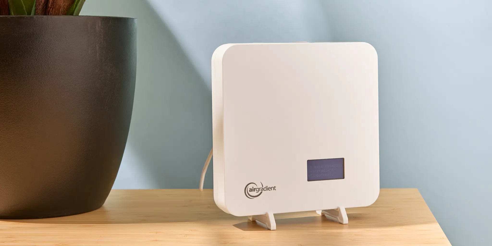
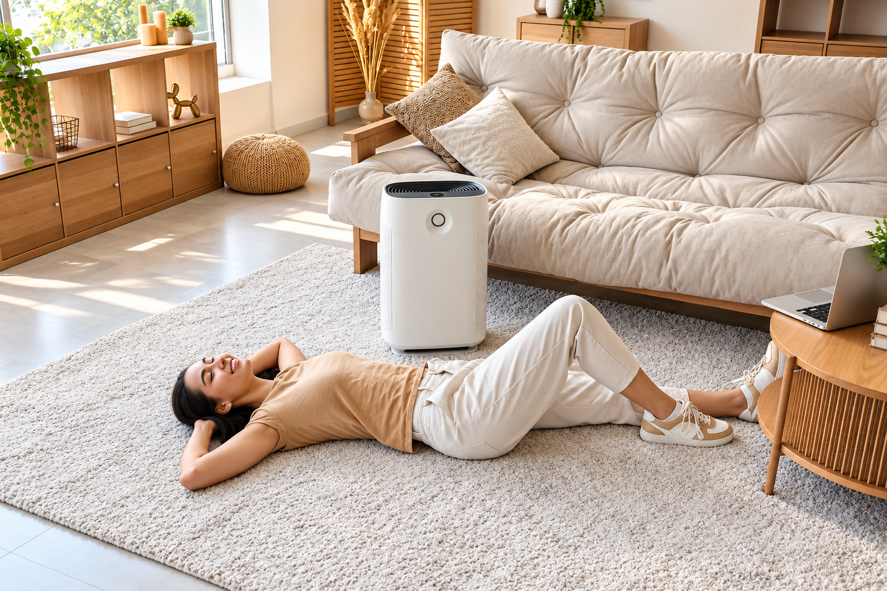

See how AirPure filters indoor air through multiple purification stages to help create a cleaner and more comfortable space.
AirPure continuously draws indoor air through multiple filtration stages to help reduce airborne particles, unwanted odours and other common indoor pollutants.
The purifier pulls surrounding indoor air into the filtration system for processing.
The filtration system helps capture fine airborne particles and unwanted contaminants.
Activated carbon filtration helps reduce common household odours from indoor air.
Filtered air is circulated back into the room for a cleaner and comfortable indoor environment.
AirPure combines different filtration technologies to address particles, odours and other common indoor air pollutants.
Helps capture fine airborne particles such as dust, pollen and other particulate matter.
Helps reduce common indoor odours and certain gaseous pollutants from the air.
Selected AirPure models use UV technology as an additional stage within the purification system.
Filtration technologies may vary depending on the AirPure purifier model.
AirPure filtration is designed to help address several common indoor air concerns, depending on the purifier model and filtration system.
Helps capture airborne dust and fine particulate matter through the filtration system.
Helps reduce airborne particles such as pollen and other common indoor allergens.
Activated carbon filtration helps reduce common household odours from indoor air.

Multiple filtration stages help address selected airborne pollutants found in environments.
The right purifier depends on your room size, usage pattern and indoor air quality needs. Choose a space below to understand what to consider.

Bedrooms, study rooms and other compact spaces where a smaller purifier can be suitable.
Living rooms and everyday shared spaces that require broader air circulation.
Larger rooms and open areas where room coverage becomes an important consideration.
Offices and professional spaces where continuous indoor air circulation may be needed.
AirPure can help you understand indoor air conditions through real-time air quality information and smart purifier controls, depending on the model.

View air quality information and understand changes in your indoor environment.
Selected models can adjust purification operation based on detected air conditions.
Stay informed about your indoor air through supported purifier displays or controls.
Regular filter checks and timely maintenance help your AirPure purifier continue supporting cleaner indoor air over time.
Inspect the filter regularly and look for visible dust buildup or signs that it may need attention.
Follow the recommended care instructions for your specific AirPure purifier and filter type.
Schedule filter replacement when your filter reaches the recommended replacement point.
Filter care and replacement intervals may vary depending on the purifier model, usage and indoor air conditions.

Explore our air purifiers, compare key features and discover a solution that fits your space and indoor air needs.